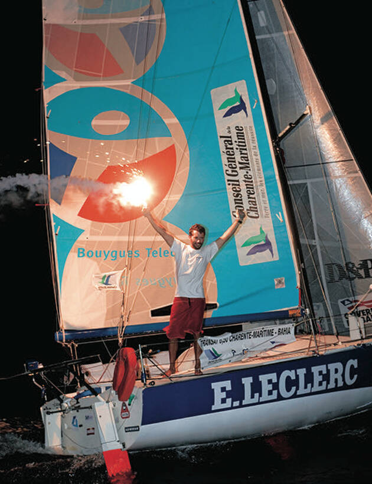

Le bateau
REST @ SEA — Mini 433
Le nom
Trouver un nom de bateau n'est pas la chose la plus facile.
Est-ce le nom d'un ami ? Est-le nom d'un endroit ?
Pour ma part, j'ai choisi le nom d'un processus, un mouvement, une action.
Sur la mer, élément tumultueux, à l'image du monde, j'avance cahin-caha au gré du vent, bercé ou chahuté par les vagues.
Mon objectif est d'avancer, choisissant un cap, réglant les voiles pour être rapide, en sécurité, réglant en fonction du vent.
Une fois réglé, il est temps de se reposer avant la prochaine manœuvre.
REST @ SEA, est ce mouvement perpétuel, entre action, réglage, manœuvre et repos. Le tic-tac incessant du monde résumé dans le mouvement d'un bateau et l'action puis le repos de son équipage.
REST @ SEA est également un clin d'œil à mon travail d'informaticien, artisan du web, mettant mes compétences aux services d'entreprises innovantes souhaitant changer les choses et collaborant autour du logiciel libre, notamment en développant et en déployant des API REST.
REST @ SEA est également un jeu de mot qui se veut un adage :
En Mini, Reste Assis.
Sur ce petit bateau très puissant. Assis sur l'eau, accroché à la vie.
Un Mini

Les minis sont les plus petits bateaux de course au large. 6,50m de long, 3m de large, 12m de haut, 2m de profondeur (pour les protos).
Un proto
Le mini 433 est un prototype, dessiné par l'architecte Samuel Manuard en 2003. Il n'en existe qu'un unique exemplaire, bien qu'il ait 7 frères et sœurs :
- #431 Tip Top Too skippé par Josep COSTA FÄH
- #432 Diabol'o skippé par Tim DARNI
- #491 Marcel for Ever skippé par Yannick LEMONNIER
- #509 BANZAÏ skippé par Tamás KOVACS
- #510 Adia Mobil Too skippé par Andraz MIHELIN
- #567 SPH skippé par Jérome KOCH
- #595 (Sur de nouveaux plans) BE COMPOSITES skippé par Koen WILLAERT
Un podium
Ce bateau n'a réalisé qu'une transat en 2005, mais c'est lors de cette dernière qu'il a été mené à la victoire par Corentin Douguet.
Un refit
Le bateau a passé plus de 10 ans dans un hangar à Lorient avant que je le rachète en 2019.
Il y a donc eu un gros travail pour le remettre en état de courrir.
- Parc à batterie + circuit de charge par panneaux solaires
- Électronique
- Changement de la porte d'accès
- Ponçage et vernissage du mât
- Changement des bastaques et des haubans textiles
- Changement des fillières par du textile
- Changement des bouts et matelotage complet (drisse, écoute, bout dehors)
- Ajout de point de levage pour la grue de Lorient
L'hiver 2020 sera consacré à la peinture du pont, de la coque et des appendices.